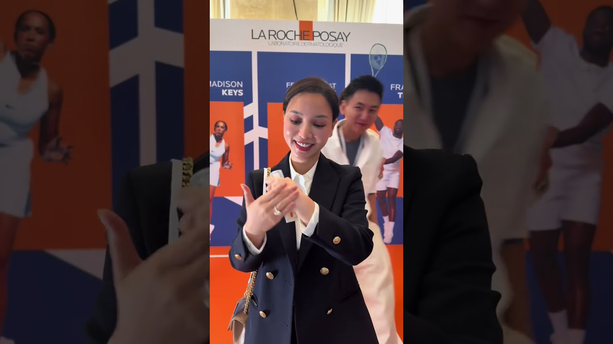

Leveraging Customer Retention on User-Generated Content Platforms: Implications for Influencer Marketing
A Four-E framework explaining how Experience, Expectations, Equity, and Engagement drive Customer Retention on UGC platforms and what it means for influencer and brand strategy.
Survey in Vietnam n = 565 UGC platform users

New video! Link in bio 12.3K 398Subscribe
Sample & Methodn = 565Cross-sectional online survey with split-sample validationModelFour-EExperience, Expectations, Equity, and EngagementDominant DriverCECustomer Engagement is the strongest predictorExplained Variance55% CE 70% CRAntecedents explain CE; CE explains retention
Why this matters
UGC platforms empower anyone to create, share, and influence. In a world of endless content, retention is everything.
Retention fuels repeat usage, loyalty, and advocacy.
Influencers shape perceptions, expectations, and brand equity.
CE mediates the relationship between antecedents and retention.
H2 (+)H3 (+)H4 (+)H1 (+)H5a-H5c mediation
Evidence highlights
Good FitAll major fit indices met recommended thresholds.
55%of variance in Customer Engagement (CE) explained by antecedents.
70%of variance in Customer Retention (CR) explained by CE.
Key takeawayCustomer Engagement is the dominant driver of retention on UGC platforms.
Example creator cases (exploratory insights)
Khoai Lang ThangKey drivers: CX, CE
Vo Ha LinhKey drivers: CEX, CE
Hannah OlalaKey drivers: BE, CX
Strategic implications for brands & influencers
Elevate Experience Invest in seamless UX, valuable content, and personalized interactions.Manage Expectations Set clear promises and deliver consistent value to build trust.Build Brand Equity Strengthen quality, credibility, and communication through storytelling.Drive Engagement Spark participation, co-creation, and emotional connections that keep users coming back.Measure What Matters Track engagement quality, not just volume, because CE drives retention.
Created by Chung Hy Dai Data · Insight · Strategy Ho Chi Minh City, Vietnam
Customer engagement is the bridge between experience and loyalty in the creator economy.
Reported study summary | Four-E retention logic | SEM
Influencer Retention, Engagement, and Brand Transfer on UGC Platforms
This manuscript-aligned page summarizes a UGC influencer study in Vietnam using the Four-E construct logic (CX, CEX, BE, CE) and split-sample validation. The model is estimated with EFA and CFA/SEM (overall n = 565; EFA n = 200; CFA/SEM n = 365), with retention explained primarily through engagement quality.
Overall sample: n = 565 Split: EFA n = 200 | CFA/SEM n = 365 Cross-sectional survey + SEM workflow
Reported
Background
Influencer campaigns on UGC platforms often optimize reach metrics before clarifying how trust, experience, and expectation matching translate into retention. The study addresses this gap by testing a structured Four-E logic and by positioning engagement quality as the central bridge between exposure and return behavior.
RQ1
Which antecedent constructs most strongly contribute to consumer engagement quality (CE) in UGC influencer campaigns?
RQ2
Does CE act as the direct pathway to customer retention (CR) after influencer exposure?
RQ3
How should the reported structural logic be translated into campaign action order without inventing statistical claims?
Construct Development Logic (Paper Order)
CE
Consumer Engagement
CE is framed as interaction depth and quality, not only view count. It functions as the model bridge to retention.
CX
Content Experience
CX captures perceived informational and narrative quality of creator content in the UGC stream.
CEX
Expectation Alignment
CEX reflects whether creator claims and audience expectations match delivered product or service experience.
BE
Brand Equity Transfer
BE captures transfer of creator credibility and symbolic value to the promoted brand context.
Hypotheses Summary
H1 CE → CRH2 CX → CEH3 CEX → CEH4 BE → CEH5a/H5b/H5c mediation via CE
Reported
Method
The method follows a cross-sectional online survey protocol with split-sample construct validation and structural testing. The workflow keeps exploration and confirmation separate, then estimates path and mediation logic using SEM.
Design
Cross-sectional online survey targeting active UGC platform users in Vietnam.
Inclusion Criteria
Respondents had to be active users who regularly consume influencer-led UGC content and can evaluate campaign experience and trust signals.
Collection Period
Reported as one online collection wave in the manuscript screenshots. Exact calendar dates are not visible in the available screenshot source set.
Split-Sample Logic
Exploratory factor analysis on n = 200, followed by CFA and SEM on n = 365, with total sample n = 565.
Modeling Workflow
EFA establishes factor structure, CFA confirms measurement consistency, and SEM tests direct and mediated retention pathways.
Period
Single cross-sectional online wave (exact dates not shown in screenshots).
Total Sample
Overall n = 565.
Split Samples
EFA n = 200; CFA/SEM n = 365.
Model Family
Measurement validation (EFA/CFA) and structural equation modeling.
Reported Outcomes
CE model R2 = 55%; CR model R2 = 70%.
Measurement Note
Construct items for CX, CEX, BE, CE, and CR were developed through the study instrument and validated through split-sample factor procedures before structural path interpretation.
Reported + Inferred
Results
Reported Interpretation
CE model R2 = 55% and CR model R2 = 70% are reported values used consistently on this page.
CE is the direct bridge to CR in the tested structure.
H5a/H5b/H5c are interpreted as mediation routes where CX, CEX, and BE contribute to retention through CE.
Inference is limited to qualitative interpretation and does not claim unavailable coefficient tables.
Disclosure and comparison framing support expectation alignment first, then drive engagement through question-answer and product clarification interactions.
Creator-brand association supports brand equity transfer, while narrative packaging maintains content experience quality during sponsored integration.
External explanatory case, not in survey sample.
Managerial Translation
Managerial Implications
Managerial recommendations are derived from reported model logic and constrained qualitative inference. The main implication is to build campaign sequencing around engagement quality as the operational bridge to retention.
Engagement-First Optimization
Use CE as the operating KPI for campaign diagnostics: improve interaction depth, response quality, and recurring participation before scaling exposure spend.
Expectation-Alignment and Trust Safeguards
Deploy disclosure discipline, claim verification, and message-product matching to reduce expectation gaps before conversion-focused pushes.
Brand-Equity Transfer Governance
Formalize creator-brand fit criteria and monitor spillover risk so brand-equity transfer supports retention rather than short-cycle attention only.
Sequencing Rule
Fit and authenticity first.
Engagement loops second.
Conversion optimization last.
Reported + Inferred
Limitations Note
The visual package combines reported structure with explicit qualitative inference to improve managerial readability. Exact public coefficient tables are not visible in the available screenshot source archive, so this page does not claim numeric path coefficients or p-values.
Source Attribution
Paper screenshot source: archived local screenshot evidence set.